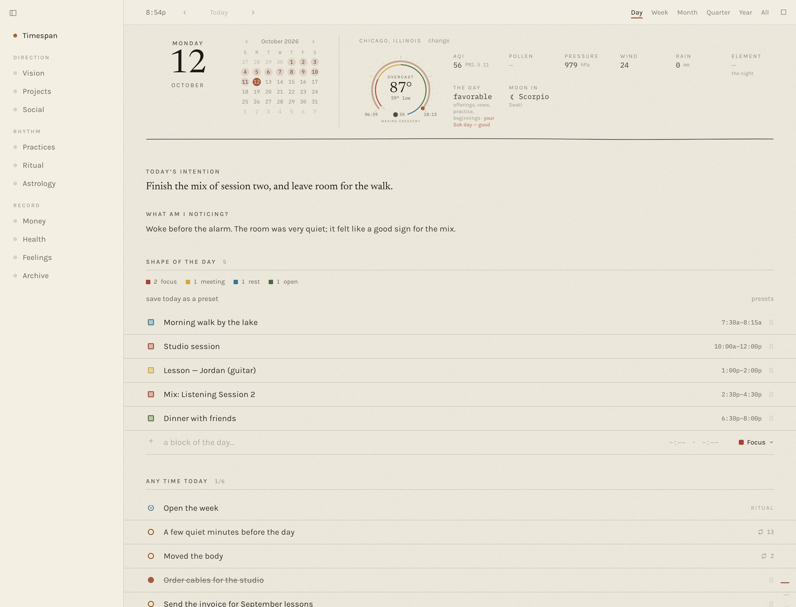
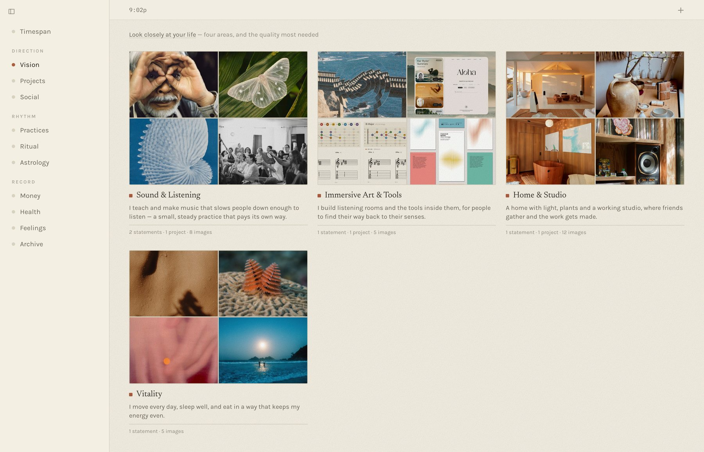
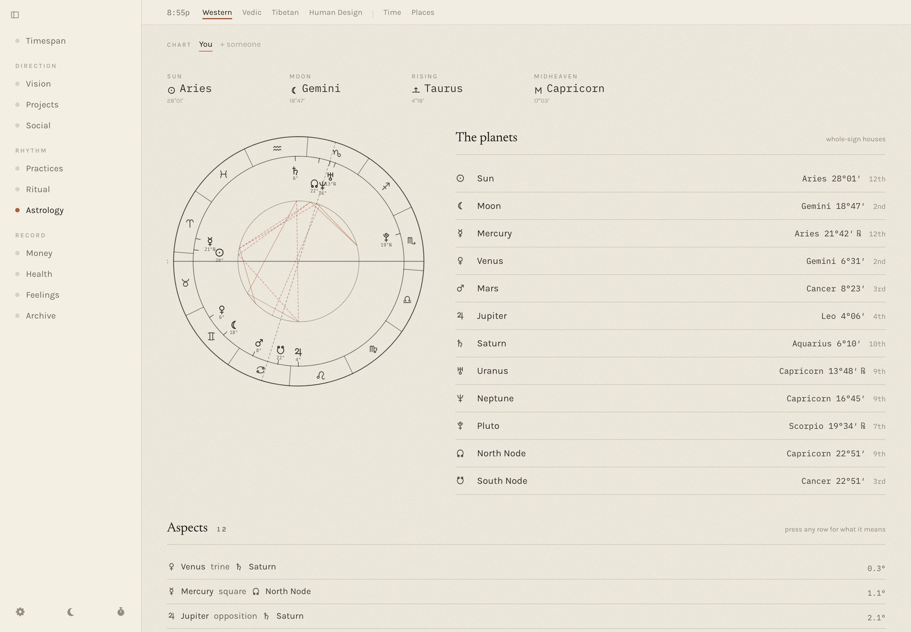
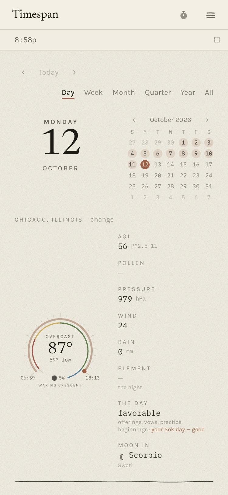
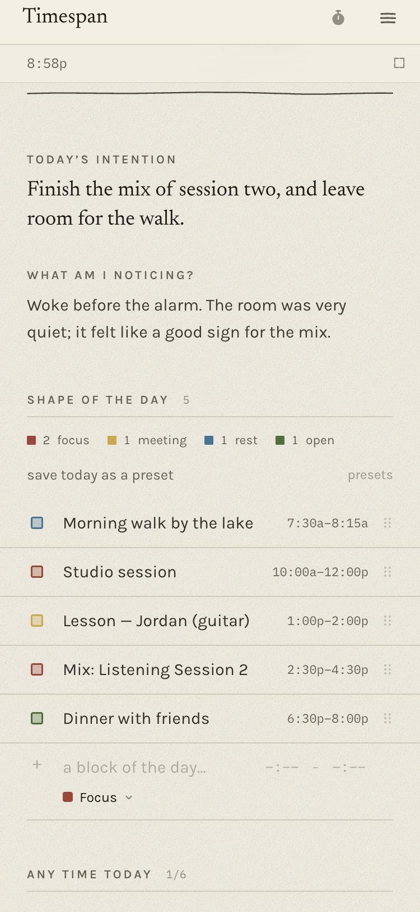
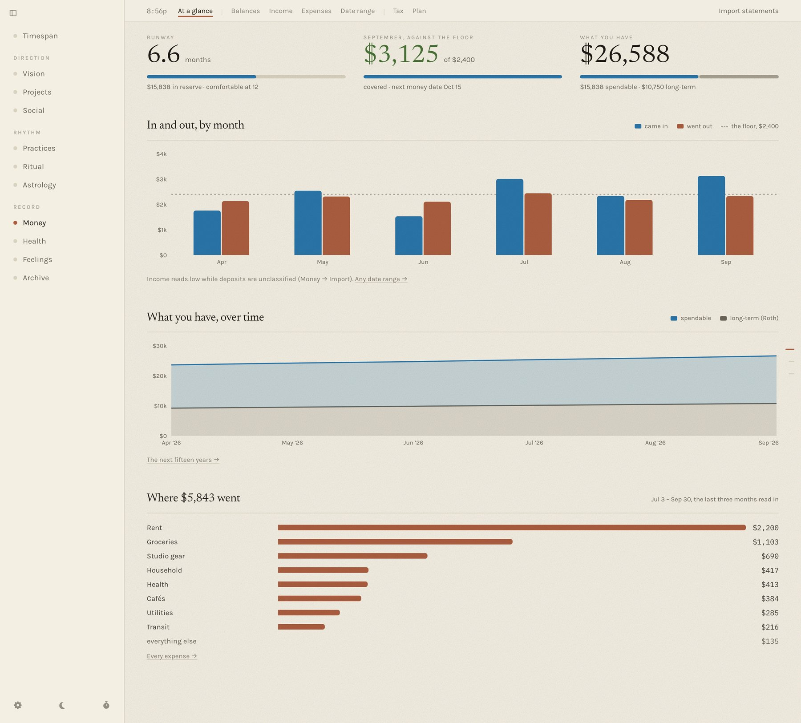
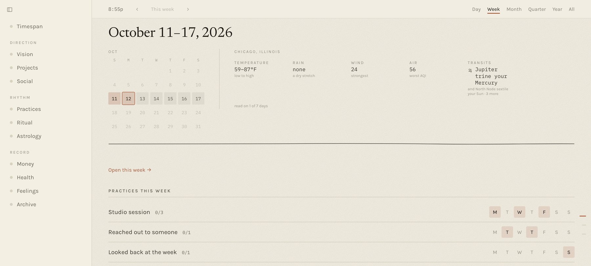
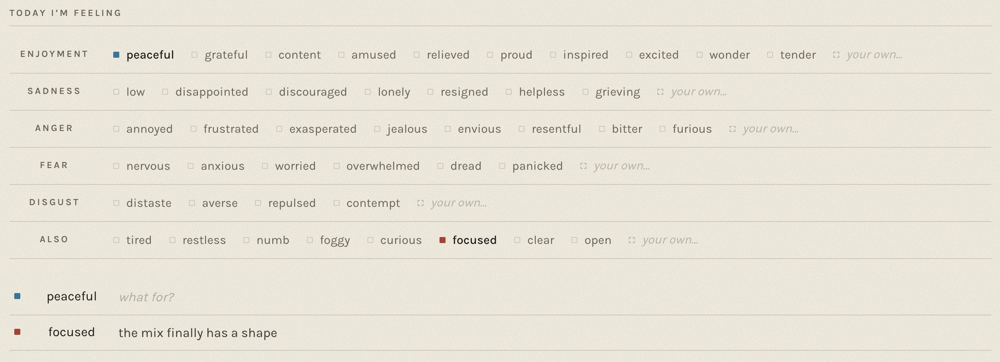
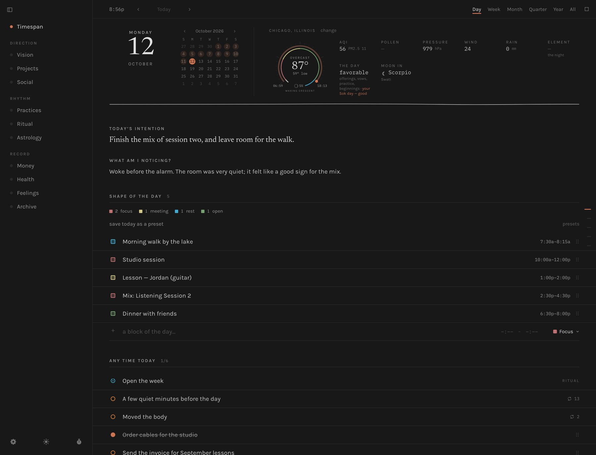

No. 05 Case study · 2026 – present
Becoming
A local-first companion for life development — money, the body, time and attention in one place, designed to report without ever grading.
In short
- The problem
- Tools that track a life mostly grade it — scores, streaks, a red number. For a freelancer with irregular income, that machinery produces the anxiety it claims to relieve.
- My role
- Sole designer and developer — research, IA, design system, data model, privacy architecture, and the Mac and Home Screen builds.
- The core constraint
- Report, never grade — enforced at the API layer. The person's own words are never generated for them, and their data never leaves their device.
- The outcome
- A working app on a Mac and an iPad: 30 screens on one control grammar, statements reconciled to the penny, and the same code running with no server anywhere but inside the page.

01 · The problem
Every tool in this category is an anxiety machine
I'm a freelance sound artist and teacher. My income arrives in uneven pieces, and the tools meant to help were the opposite of help. Open a budgeting app and something is red. Open a habit tracker and a streak is about to break. The whole category's interaction model is scoring — and scoring a life produces the state that makes good decisions impossible. A ledger you avoid is worse than no ledger.
Money also turned out to be only the loudest place energy goes. The body, attention, relationships and creative work are others, and they lived in five different apps that never spoke. So Becoming holds them together under one question: is where my energy actually goes matching what I say matters?
What made it hard is that the honest answer is often “not this month.” The design problem was never “visualise personal data.” It was build an honest instrument that a person will still open on a bad month.

02 · Constraints
Four limits, and the one I chose
One person, no budget. I'm the designer, the developer and, at first, the only user. No paid Apple developer account, no hosting bill, no team — every feature had to be worth maintaining alone.
The data is the most private there is. Bank statements, bloodwork, how I felt this morning. Local-first isn't a feature here; it's the premise. Nothing goes to a server I don't own — and as it turned out, nothing goes to a server at all.
It has to work for someone who isn't me. Partway through, the brief widened: my partner wanted a copy, starting from empty. That meant no personal content in the shipped code, a first run that works on a blank database, and an install that needs no technical help.
And the one I chose: report, never grade. A principle that lives in a style guide gets violated the first time a feature wants a progress bar, so this one lives where data is produced. The derived endpoints return counts, shares and ranges — never scores, targets or streaks. If the API can't emit a grade, no screen can accidentally render one.
“Reads compute, they do not grade.”
— the rule in the architecture doc that settles feature arguments
Two smaller rules come from the same place. The app never writes the person's words — vision statements, intentions and feeling notes are only ever theirs. And any interpretive text restates a source and cites it: the astrology readings quote the book and page they come from rather than inventing a softer line. The mirror can be wrong, but it can't make things up.

03 · A decision
What I tried first, and what I'm proud of instead
What didn't work: reaching the Mac from the iPad. The obvious way to get a desktop app onto a phone is to leave the desktop on and reach it over the network. I built exactly that — a private network tunnel, a passphrase door in front of the server, and a Home Screen icon pointing at it. It worked, and it was wrong. It meant a computer left running at home, a network to keep healthy, and a door that has to be right every time. After living with it, I wrote:
“I just want a functioning app that doesn't need all of this remote access stuff of leaving the computer on.”
— my own note, after living with it
What I'm proud of: the server runs inside the page. Instead of
sending the iPad to the server, I sent the server to the iPad. The same server
code that runs on the Mac is bundled into the web app, with small stand-ins
underneath it: SQLite compiled to WebAssembly instead of a native database, the
database file kept in the browser's own storage, the same PDF parser so a bank
statement reads identically on both. The page's requests to /api
never leave the device — they're answered in-process.
The result installs from a link to the Home Screen, works offline, and needs no account, no cloud and no developer program. My partner's copy holds their data and nobody else's. And because it is one codebase rather than a port, every change I make on the Mac reaches the iPad on the next publish. It's the privacy promise made literal: there is no server to leak from, because there is no server.


Smaller things didn't work either, and were taken out as quickly. A calendar moved into the side menu lasted an afternoon (“no, I don't like it, put the calendar back”). A new colour palette for time blocks was, in my own review, horrendous — so the colours went back to what they had been, warm to cool across the day, with a spectrum offered beside them as a choice rather than a replacement.
04 · The insight
An empty stretch isn't a bad stretch — it's one not read yet
The money view kept telling me I was falling short, and it took using it to see why. I don't type expenses in as they happen; I bring in statements on a couple of fixed days a month. So the current month always looked thin and the floor always looked missed. I wrote:
“I don't input my expenses until some day in the future, the money date. So this will always look like I'm not hitting the mark.”
— my own note, from using it on real months
That changed the model, not just the chart. Every money reading now asks one question first: is this stretch read in all the way, part of the way, or not at all? Only a stretch read in all the way is set against the floor or coloured as covered or short. The headline is the last whole month; the month still open is drawn as a dashed outline that says when it comes in, never as a bar that came up short. The week's and the day's pages say the same thing in words: this week's money comes in with the money date, Oct 15.

The same lesson — design for how the person actually works, not how the data would like them to — moved the day around too. Unscheduled to-dos used to sit at the top. I asked for them to go below the hours, “so I'm not consumed so much by the unfinished, unscheduled things, and that my focus is first on what is on my calendar.” Weekly practices got their own days for the same reason: they appear on the days they belong to, and on other days only as a quiet line — still open this week — instead of a to-do that nags all seven.

The design system
One control grammar, read as paper
Growing fast across thirty screens, the app accumulated the ordinary disease: every page had invented its own way to add a row, remove one, or mark something done. The fix was a single vocabulary every surface builds from. Dot for a thing you tick — hollow is still yours to call, filled is done. Mark for a state that simply was — a square, because a circle reads as something you can press. Row for a ruled entry, never a card. Inputs are bare, sitting on a rule — a boxed field reads as a form to fill in, and this needed to read as a notebook. Native browser dialogs are banned outright, because a system alert breaks the page's voice mid-sentence.
The feelings grid is that grammar under the most pressure. It's built on the Ekmans' Atlas of Emotions — five families, each holding states of different intensity, plus a row for the ordinary words outside them. It's multi-select, because a day is rarely one feeling, and tapping is the whole interaction. Saying what a feeling was about is a second, optional gesture, because a feeling alone is weather and a feeling with its object is material. Nothing is counted: no streak, no “days without anger.”

Night mode is its own palette, not an inversion: a near-black taken from this portfolio's charcoal, quieter rules, no paper grain, and the day's terracotta lifted just enough to hold against the dark.

The messy middle
Two things I got wrong in my own promise
The privacy promise was broken and nothing said so. The server bound every network interface by default, which meant that for a while anyone on the same wi-fi could have read the whole database just by knowing the address. Nothing in the interface hinted at it. It now listens to the machine it's on and nothing else — and the iPad version has no network surface at all.
Onboarding lost the first thing someone wrote. Code written against my own full database assumed areas and settings existed. On an empty one it failed silently and dropped a new user's first vision statement, at exactly the moment trust is decided. First run is now tested on a blank database as its own case, because “works on my machine” and “works on an empty one” are different claims.
05 · Outcome
Two devices, no server, and a number that balances
Becoming runs as a packaged Mac app and as a Home Screen web app that holds everything on the device. It's 30 screens, 98 components and 68 server modules — about 57,000 lines of TypeScript across 230-odd commits since September — on one control grammar, with the architecture and the design system written down and kept current. It reads real bank and brokerage statements locally, deduplicates every row so re-importing never double-counts, and reconciles to each statement's own totals to the penny.
What it enabled is simpler to say. I make money decisions from the ledger rather than from my nervous system, because the ledger no longer lies to me about the month that isn't in yet. And someone other than me now keeps their own copy on their own iPad, with nothing to set up and nothing that leaves it.
The honest framing: it's in use by two people, not two thousand. It has no public source, because local-first is the premise. I won't claim adoption it doesn't have. What it shows is a product held to an unusual constraint long enough that the constraint shaped the data layer, the API, the component library and the copy.
06 · Reflection
What I'd do differently, and what I'd keep
I'd have used it on real days sooner. The money-date insight was invisible on a screen of test data and obvious within a month of my own. The best design input on this project came from using it, not from thinking about it.
I'd have asked “where does it run?” on day one. The tunnel solved the wrong problem well. Putting the server inside the page was available from the start; I just hadn't asked whether the person needed a server.
Put the principle where it can be enforced. “Don't grade the user” survived contact with real features because the API can't emit a grade. A principle in a doc is a preference; a principle in a contract is a constraint.
And the one that generalises furthest: a product's promise has an architecture, or it isn't a promise. “Your data stays with you” was a sentence on a settings page until the network said otherwise. Design that stops at the surface can't tell the difference — which is a large part of why I build the things I design.